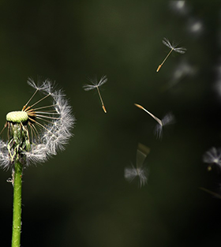

全部功能
Styles
Tables
Typography
Flexible Columns
Services
Error Template
学科前沿
研究论文
新闻
观点
研究分析
生物学职业生涯
视频
前沿精选
学科脉络
Blog
Blog Detail 1
Blog Detail 2
实验共享
生物化学
植物生物学
动物生物学
细胞生物学
微生物学
分子生物学
神经生物学
演化与生态学
现代生物技术学
生物信息学
生物医学
生物图鉴
动物
植物
微生物
智能检索
学科分类
生物学（biology）是探索生命现象和生命活动规律的科学，是自然科学中的一门基础学科。 其研究对象是生物（包括植物、动物和微生物）的结构、功能、发生和发展规律。

生物化学
生物化学，顾名思义是研究生物体中的化学进程的一门学科，常常被简称为生化。 它主要用于研究细胞内各组分，如蛋白质、糖类、脂类、核酸等生物大分子的结构和功能。
植物生物学
植物生物学(plantbiology)所研究的植物是生物圈中一个庞大的类群,约有数十万种,广泛分布于陆地、河流、湖泊和海洋中,它们在生物圈的生态系统、物质循环和能量流动中处于最关键的地位，它们在自然界中具有不可替代的作用。
动物生物学
动物生物学(animalbiology)是以生物学观点和生物技术针对动物开展生命规律研究的一门科 学,是生物学( biology)的分支学科,是自然科学的基础学科之一。它研究的动物生命系统涵盖基因、细胞、器官、个体、种群、群落和生态系统等多个层次
细胞生物学
细胞生物学(cellbiology)是研究细胞结构和功能的生物学分支学科。 细胞生物学是应用现代物理学与化学的技术成就和分子生物学的方法与概念，在细胞水平上研究生命活动的学科。
微生物学
微生物学（microbiology）是近代生物学的分支学科之一。它是在分子、细胞或群体水平上研究各类微小生物（细菌、放线菌、真菌、病毒、立克次氏体、支原体、衣原体、螺旋体原生动物以及单细胞藻类）的形态结构、生长繁殖、生理代谢、遗传变异、生态分布和分类进化等生命活动的基本规律，
分子生物学
分子生物学(molecular biology)是从分子水平研究生物大分子的结构与功能从而阐明生命现象本质的科学。自20世纪50年代以来，分子生物学是生物学的前沿与生长点，其主要研究领域包括蛋白质体系、蛋白质-核酸体系 （中心是分子遗传学)和蛋白质-脂质体系（即生物膜）。
神经生物学
神经生物学(neuralscience)也致力于阐明行为和心理活动的生物基础，以及这些活动背后的神经机制。它使用多种技术和方法来研究大脑和神经系统，包括神经成像技术、电生理学、分子生物学、遗传学等。
演化生态学
生态与演化科学(ecology)是研究生物与环境相互作用和适应环境变化的重要学科。生态学关注生物与环境的相互关系,研究生物群落、生态系统等的结构和功能。
生物信息学
生物信息学（Bioinformatics）是研究生物信息的采集、处理、存储、传播，分析和解释等各方面的学科，也是随着生命科学和计算机科学的迅猛发展，生命科学和计算机科学相结合形成的一门新学科。
生物技术学
生物技术(biotechnology)主要研习现代生物学和生物技术的基本理论、基本知识和基本技能，包括分子生物学、微生物学、基因工程、发酵工程及细胞工程等方面，主要利用生物体的物质来改进产品、改良植物和动物、或为特殊用途而培养微生物。
学境由华北理工大学学生团队开发及运维，本站坚持知识共享精神，全部内容供网友自由使用 |
华北理工大学生命科学学院
回到顶部